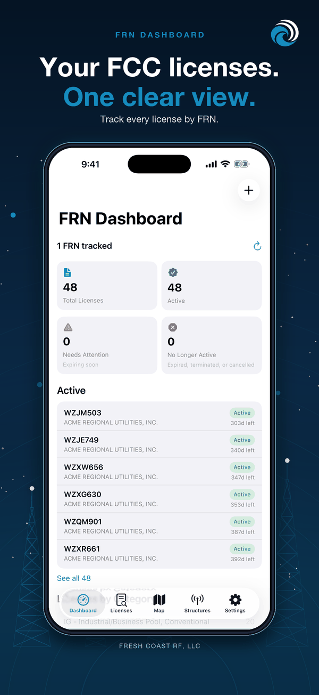
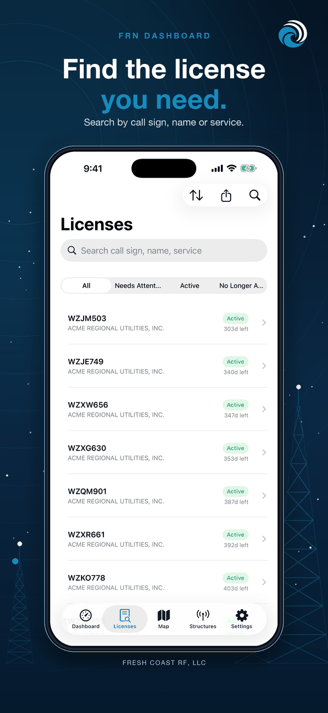
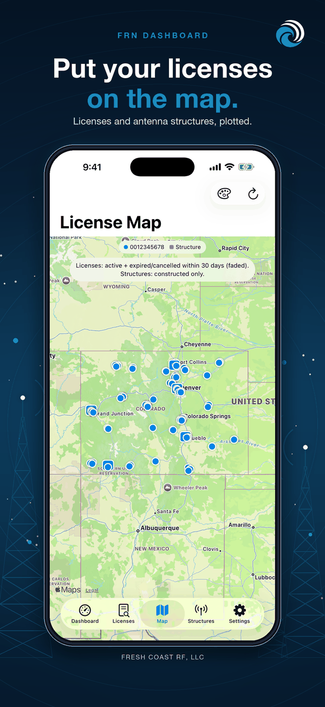
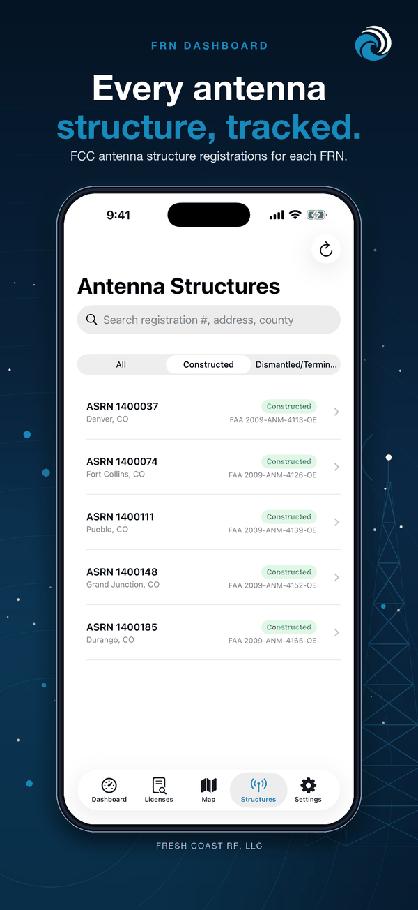
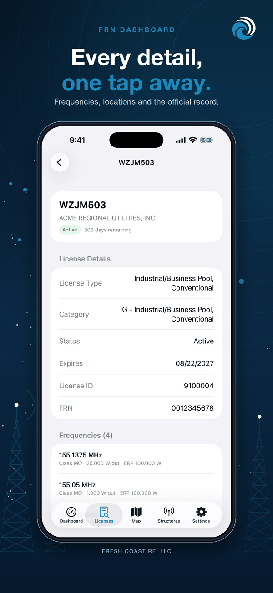

FRN Dashboard tracks FCC licenses by FRN (FCC Registration Number). Add an FRN and the app finds every license and registered antenna structure under it, then sorts them by status and expiration date. It warns you before a license expires.
Download on the App Store On the App Store as ULS Dashboard.
Features
- Track one or more FRNs, each with a label such as a client name
- Licenses sorted by status: active, renew soon, expiring soon, expired, and cancelled
- Searchable license list with call sign, radio service, licensee, grant and expiration dates, and a link to the FCC page for each license
- Call sign lookup for any call sign, including ones you do not track
- Map of the licensed locations for your tracked licenses and your registered antenna structures
- Structures list with height, type, address, FAA study number, and FAA determination
- Reminders before each license expires, with a lead time you choose (30 days by default)
- Home screen widgets, small and medium, showing how many licenses need attention
- PDF license report and CSV export
How it works
- Add an FRN. It is saved on your phone only.
- The app looks up the licenses under that FRN and lists them by status.
- The app downloads the FCC's weekly public tower file and keeps the structures your FRNs own.
- Open a structure to see its FAA study. The app asks the FAA's public site for that study when you do.
- Results are saved on your phone, reminders are scheduled, and the widget updates.
Who it is for
Businesses, agencies, and radio shops that hold FCC licenses, and anyone who manages licenses for clients.
Screenshots




